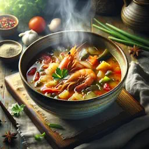

Embark on a Culinary Adventure
Discover the Flavors of Thailand
Tom Yum Goong: A Spicy Thai Delight
Tom Yum Goong is a classic Thai soup renowned for its bold
flavors and aromatic spices. This hot and sour soup features a
tantalizing blend of lemongrass, galangal, and kaffir lime leaves,
combined with succulent shrimp.
The soup is further enhanced with fresh chilies, which provide a
fiery kick, and lime juice, lending a bright, refreshing acidity that
perfectly balances the heat. Fish sauce adds depth and savory richness,
while mushrooms contribute a tender texture and subtle umami flavor.
Often garnished with fresh cilantro and sometimes a splash of chili oil
or roasted chili paste, Tom Yum Goong delivers a complex harmony of
spicy, sour, salty, and slightly sweet notes in every spoonful.
Both comforting and invigorating, this beloved soup is enjoyed
not only for its vibrant taste but also for its aromatic qualities
and reputation as a warming, restorative dish. Whether served as a
starter or a main course, Tom Yum Goong offers a true taste of Thai cuisine’s
bold character and masterful balance of flavors.


The key to a delicious Tom Yum Goong lies in the balance of
flavors – sweet, sour, salty, and spicy.
- Chef Somchai, Thai Cuisine Expert
Ingredients:
- Lemongrass: 2 stalks
- Thai Basil: 1 cup
- Kaffir Lime Leaves: 3 leaves
- Shrimp: 500g
Preparation:
- Simmer the broth for 10 minutes.
- Add lemongrass, galangal, and kaffir lime leaves.
- Stir in shrimp and cook until pink.
- Season with fish sauce, lime juice, and chili paste.
- Garnish with Thai basil and serve hot.
Cooking Tips:
- 1/4 cup of fish sauce adds authentic Thai flavor.
- 1 tablespoon of chili paste gives the soup its signature heat.

Recipe Details
| Ingredient |
Quantity |
| Lemongrass |
2 stalks |
| Thai Basil |
1 cup |
| Kaffir Lime Leaves |
3 leaves |
| Shrimp |
500g |
Preparation Time: 20 minutes
Serving Suggestions: Serve with steamed rice or jasmine tea.